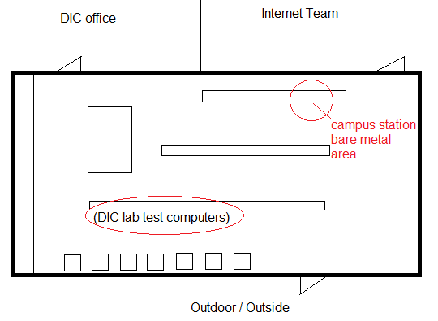

Bare Metal
Bare metal is when we need to restore our lab computers to its original state with the latest Tag branch installed on it. We reinstall everything from scratch so that our computer can be free from any defects. This is to ensure that if there's been any changes or updates to our computers that shouldn't have taken place, the computer will be reverted by to its orginal state.
Tip
There is a documentation on the F drive in much more detail and up to date instructions
Highlights
- Make sure the desktop computer is dis-connected and brought to the campus station
-

- Power off computer to be bare metal
- Ask Team Lead or (Merica) to disconnect the PC being bare metal
- For some special reason, Merica has to d/c the PC before it can be bare metal
- If you turn on the PC and accidentally forgot to hit F12 at the right time and the PC starts up normally, tell Merica to re-disconnect the PC as the PC will re-register itself to the server, which the PC needs to be in d/c mode for bare metal to work
- Unplug all wires and take desktop PC to the campus station
- Hook up the desktop at the campus station, there should be 4 stations, choose any of the 4 to hook up the desktop to
- Sitch the VMC-device to point to the correct port (1-4) to display your desktop on the screen - this is because we only have one screen for 4 computer stations that are hoooked up there
- Boot the computer and (Repeatedly) press F4 until you get a loading progress bar at the bottom of the screen in white - this will indicate you are at the right screen and will take 5-15 minute to load
- If you see a blue screen and a little window that says "things to do" then you missed the F12 key at some point
- If so, power off the computer > tell merica to re-disconnect the PC
- You get a selection window of what preset to install the computer with > choose "dsgnit load - DA" for Design-It Center > OK
- This will take 5-10 minutes to prompt you a window asking for password
- Pass: *pxeb00t*
- Store#: 5555, 8888, (or which ever computer you are bare metaling)
- Computer#: 01, 02, etc
- Wireless: always none for our DIC computers
- Exclom1
- Now you walk away, and wait 1-2 hours to see for a window that will say "Complete"
- When you do see it, shut down the computer, disconnect wires, bring PC back to it's original place, plug in all cords, and boot it normally by just turning on the computer and letting it run and do its thing
- Bare metal complete